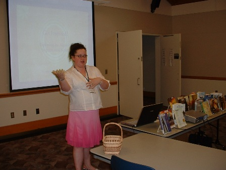
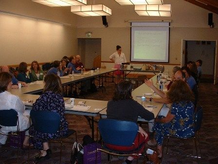

| Supporting Documentation |
| Pre-Training Handout |
| Training Slides |
| Inspired Librarian Blog |
| “A significant teaching or training experience” |
|
Baseline I love to teach and have been practicing the art of teaching as long as I can remember. My family tells me I was showing the way for other students as early as nursery school. In elementary school and beyond, my teachers often selected me to help struggling classmates. I enjoy the challenge of making information understandable to another person. And in teaching something I always increase my own knowledge. As I began working in libraries, I was inspired by the vision of librarians as educators. In my role as library manager, I mentor and instruct my staff as well as teach patrons how to use information tools. My commitment to teaching and training led to a two-year term on a library system-wide Training Advisory Committee. Just prior to my MLIS studies, I spent two years in a K-8 teacher education program. I completed 240 hours of teaching practicum in local schools in addition to 12 weeks of full-time student teaching. I relished that opportunity to focus on the art of teaching while learning from my students and fellow teachers. My Development As a member of my library system’s Reader’s Advisory Team, I was invited to attend a regional meeting of librarians involved in reader’s advisory services. This group, called RAPS or Reader’s Advisors of Puget Sound, meets quarterly to discuss best practices in reader’s advisory and explore various book genres. At this particular meeting the chairperson, David Wright of Seattle Public Libraries, wanted to set the quarterly topics for the coming year. The group decided to make a list of genres that the majority felt we needed to learn more about. Everyone in the room stated little knowledge of Christian fiction, except me. It was a genre that I had quickly learned to be familiar with because several of my library’s patrons were avid fans. Knowing I was a library school student (who would need portfolio projects), David suggested I create a training or “genre study” to present to the group in about a year. I accepted the challenge. This training represented an opportunity to expand my teaching skills. My most recent large scale teaching experience had been twelve weeks with sixth graders. In this situation I would get three hours to create a meaningful learning experience for adults. While I hoped the adults would prove better-behaved, I also knew they came with more complicated backgrounds and expectations. I had attended genre studies in the past that were little more than a bibliography spoken out loud. I was determined to create an interactive presentation that would add to an individual’s knowledge base and sharpen their skills. I began by increasing my own knowledge of the genre through research. I read the standard texts on the topic but also reviewed periodicals, subscribed to newsletters and observed online book discussions centered on Christian fiction. After monitoring news from the publishing world for several months, I realized that while there had been phenomenal growth in the Christian fiction market, there was also an increase in fiction titles that featured other religious traditions. I decided to expand my training to include inspirational fiction of all types. A few months before my training, I contacted a variety of publishers, explained the training I was planning and asked for information on their company, the trends they saw in the inspirational market and any giveaways for the librarians attending. Several responded and sent catalogs, sample chapters and books. In addition, one local publisher volunteered to send two editors to my training to speak about their experiences publishing Christian fiction. For genre studies, RAPS generally has a pre-session reading list distributed. I brought such a list to a quarterly meeting, but I also established a blog so that interested attendees could go online to access the list as well as explore links I had gathered. I asked David for permission to publicize the event more widely by sending an announcement to the Washington Library Association and iSchool email lists. As a result I received two invitations to visit other library systems and present the training as well as an offer of sponsorship by a WLA interest group to present at the next conference. Since I hadn’t presented yet, I knew it wasn’t my reputation that caused the response. But I was happy to know that the training I’d developed was needed by those in the field. When I did finally present my training session for RAPS it was both well attended and well received. I received positive feedback on my evaluation forms indicating that everyone learned something new and took away some valuable information. In particular, I was praised for my wise handling of a sometimes sensitive topic and my guidelines for working with patrons. While there were very few suggestions for improvement, within 15 minutes I was already thinking how to make the training more effective. For example, I had avoided giving paper handouts until the end lest the audience get distracted. But by improving my materials I believe the audience will benefit from referring to the document during the program. I also want to rearrange the timing of segments so I can add practice exercises for the reader’s advisory interview. Fortunately, my proposal to present at the next state library conference was accepted so I will have a chance to implement my ideas. But it was lovely to go to lunch after my original presentation and have my librarian friends tell me in detail how I did a great job, particularly David saying “I can’t believe you don’t know how good you are!” Additional Experiences
|
|  |
|  |